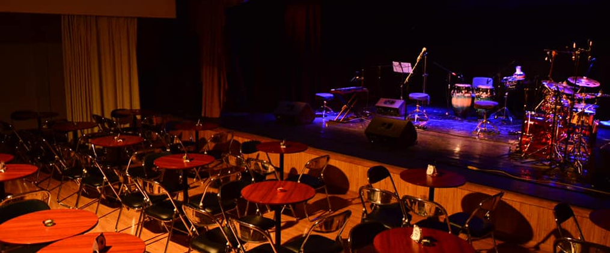
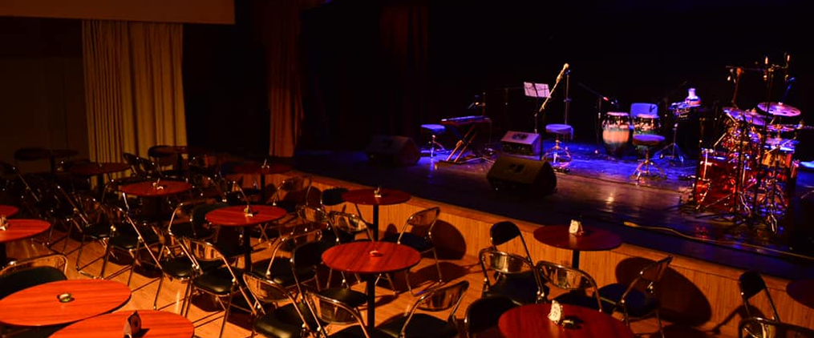

DI AMANTE
PONCHO MONJE
Música
Lugar
Teatro Nuna - Enla calle 21 de Calacoto, casi llegando al número 8509,
en plena Zona Sur de La Paz.
 Google maps
Google maps
Música
Teatro Nuna - Enla calle 21 de Calacoto, casi llegando al número 8509,
en plena Zona Sur de La Paz.
 Google maps
Tienes chance de ir en estos horarios
| Presentación nocturna! | ||
|---|---|---|
| Viernes | 6 de junio | 20:00 |
| Una única oportunidad amistad, no te la puedes perder! | ||
Para que no te me estreses
| Toma un mini, te conviene! | |
|---|---|
| Tomar de | La línea de minibús Obrajes o San Miguel |
| Transbordo | A la Línea verde (estaciones Irpavi) |
| Quedarse en | Calle 21 de Calacoto y caminar al teatro |
- Cualquier minibús que pase por la Av. Ballivián y diga “Calacoto”
- Taxi o transporte por aplicación (rápido y directo)
- Si te animas, ¡una buena caminata desde la Av. Costanera también funciona!
Que no te duela el bolsillo, la entrada cuesta:
| Según el sitio web podríamos pagar | ||
|---|---|---|
| General | Bs. 50 | |
| Graderia | Bs. 50 | Preventa exclusiva en redes sociales de Poncho |
| Mesa | Bs. 80 | |
No digo que no puedas...pero no te van a dejar entrar
¡Todos pueden entrar! No tienes
cómo zafarte.
Mira todo lo que hay!

Ya que estamos aquí, sabias que...
Ya que estamos aquí, sabias que...
Según se comenta sobre la obra...
Según se comenta sobre la obra...
“Quería hacer un disco que suene a cuerpo, a deseo, a ganas de no soltarse”, comentó entre ensayo y ensayo.
"Queremos celebrar la sensibilidad de quienes transforman la música y la luz en experiencias que se transmiten más allá del sonido."

Lo mejor es llegar con tiempo y dejarte guiar por la música que ya empieza a sentirse desde la vereda, ell Teatro NUNA está en plena Calle 21 de Calacoto, así que es fácil ubicarlo, pero no te confíes, que a esa hora la zona sur se llena, y no querrás perderte ni una nota. Vas a ver cómo, mientras te acercas, algo dentro tuyo también empieza a moverse.
Apenas empieza, personas cuentan que se sienten medio atrapados y un poco confundidos, porque no saben si reírse, llorar o abrazar a alguien. Hay canciones, sí, pero entre una y otra se cuelan historias que parece que las hubiera sacado de tu cabeza, o de la de alguien que amaste.
Y ojo, el diseño de luces fue creado especialmente para este concierto por Álvaro Quispe, un obsesivo de las atmósferas, dicen que calibró cada color con la emoción de cada canción, nada está ahí por casualidad.
Una actriz una vez aseguró que escuchó a su yo del pasado recitándole una línea desde el camerino. ¿Delirio escénico? Tal vez. ¿Magia escénica? Seguro.
Poncho Monje llega con Di-Amante, su primer álbum como solista, y no viene solo, trae una banda brutal y un setlist que es puro viaje. Dice que este proyecto es su manera de hablar del amor sin clichés, de la intensidad sin filtros.
El Teatro NUNA guarda secretos que no están en el libreto, cada función deja un eco, cada aplauso una huella.
La banda que acompaña a Poncho es una joya, músicos con recorrido, sensibilidad y groove del bueno. Entre ellos está Lucía Gutiérrez, en sintetizadores y coros, que dicen que tiene el poder de hacerte flotar con una sola nota.
El Teatro NUNA no es cualquier espacio, fue pensado como un lugar para que el arte respire sin pedir permiso, se dice que quienes pisan ese escenario dejan una parte de su alma colgada entre los focos.
Y por si te pica la curiosidad, las butacas de gradería tienen más historia que muchos festivales, si sientes que algo te abraza cuando tomes asiento, no te asustes, es el espíritu del arte independiente haciéndote mimo.
Te recomiendo buscar asiento con buen ángulo si te puedes acomodar al medio, hazlo, porque la acústica es una locura.
Por ultimo mira lo que dicen mis otros amigos
No olvides dejar también el tuyo!
Agrega tu opinión del evento y mi guía!
Increíble lo que se vivió anoche. Manuel tiene una forma de conectar con la gente que te deja con la piel erizada. La puesta en escena, los músicos, todo impecable. ¡Gracias por venir a La Paz!
Fue como una terapia musical. Salí renovado, pensando en letras, imágenes, momentos. Manuel tiene ese poder raro de hacerte sentir acompañado incluso en lo que no sabías que te dolía. Gracias por eso.
Nunca había visto a Manuel en vivo, y honestamente no esperaba que fuera tan potente. Me voló la cabeza cómo traduce la intensidad del disco Pánico a una puesta en escena tan precisa. No hay nada de show vacío ni espectáculo por espectáculo. Cada canción tiene peso, tiene intención, y te arrastra con ella. Los músicos están en un nivel altísimo, cada arreglo tiene alma. Y me conmovió mucho ver al staff trabajar con tanta dedicación detrás del escenario, sin protagonismo, pero siendo clave para que todo fluyera con una naturalidad que uno, como espectador, agradece profundamente
Aún no supero lo de anoche. Qué manera de interpretar, de transmitir tanto con cada canción. ‘Pánico’ en vivo es otra cosa, mucho más visceral, más intensa. Y el público estaba tan conectado que parecía un solo corazón latiendo con cada tema. De verdad, gracias Manuel por esa entrega tan honesta.
Lloré con ‘Te doy una canción’. Era como si la cantara solo para mí.
Fui con mi mamá, que es fan de Manuel hace años, y salí yo también absolutamente tocado por el show. Es increíble cómo logra atravesar generaciones con letras tan profundas y arreglos tan bien hechos. Lo que más me impactó fue cómo una sala entera podía pasar del silencio absoluto al estallido de aplausos en segundos. No es fácil lograr eso, y él lo hace sin esfuerzo aparente, solo con autenticidad. Lo sentí muy presente, muy humano, muy generoso. Y eso se contagió. A la salida todos hablaban bajito, como si no quisiéramos romper el hechizo. Qué hermoso regalo nos hizo anoche.
El juego de luces y las proyecciones visuales fueron un complemento perfecto. Nada distraía, todo sumaba. Se notaba que hay una visión artística clara detrás del show, y que el equipo la supo ejecutar con mucho cuidado.
Fui sin muchas expectativas y salí con el alma llena. No solo por la música —que fue increíble—, sino por la atmósfera que se creó. El Teatro Municipal se sentía íntimo, como si estuviéramos en una sesión privada. Todo fluyó tan natural, desde las luces hasta el sonido. Se notaba el cariño con el que montaron todo.
Hay conciertos que se te olvidan al día siguiente, y hay otros que te quedan como tatuaje emocional. Lo de Manuel García en La Paz fue de esos segundos. Una narrativa impecable, un recorrido emocional que nos hizo pasar por la melancolía, la ternura, la rabia, la esperanza... todo eso en poco más de una hora. Salí temblando, literal. Me tocó, me revolvió, me sanó un poquito. No puedo dejar de pensar en lo importante que es tener estos espacios donde el arte se hace con tanto respeto, tanto compromiso y tanto amor por la audiencia. Qué necesario.